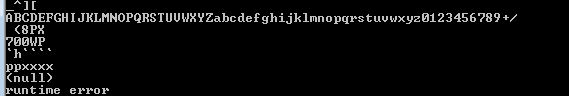
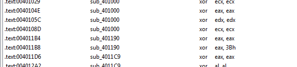
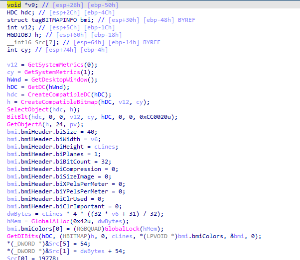

Practical Malware Analysis - Lab 12
Lab 12-1
Analyze the malware found in the file Lab12-01.exe and Lab12-01.dll. Make sure that these files are in the same directory when performing the analysis.
Q1: What happens when you run the malware executable?
On procmon we don’t get much but noticed a lot of file mapping into memory maybe it will modify some process in memory
Q2: What process is being injected?
lets pull the exe into ida, in imports we see CreateRemoteThread and the required functions for it, we could say it uses dll injection into remote thread

Look at the functions list we find only one function then the main function
in sub_401000 we see all its doing is converting PID to a process name then comparing it to explorer.exe to return 1
so we can say its injecting explorer (Almost same PrintProcessNameAndID function in (MSDN)[https://learn.microsoft.com/en-us/windows/win32/psapi/enumerating-all-processes] )
Q3: How can you make the malware stop the pop-ups?
By restarting explorer.exe like cmd command wmic process where name="explorer.exe" call terminate
Q4: How does this malware operate?
lets go over the exe, in first part its importing psapi.dll functions:EnumProcessModules, EnumProcesses,GetModuleBaseNameA (they do as their name suggests)
then it sets Buffer to Lab12-01.dll location

Second part enumerating-all-processes then saving list of process identifiers in dwprocessid, and saving number of processes in v7 (v14 >>>2->v14 / 2^2 where 4 bytes is size of DWORD ,its calculating all bytes returns over size of single process) then it is passing all process identifiers (pid) to 40100 function we said above to check if there is explorer, when found it gets a handle to explorer
Now the overhead is done, the main part here, first it allocates space in explorer process memory then writing Lab12-01.dll to it then calling CreateRemoteThread with all prepared parameters (handle to loadlibrary +handle to explorer +the base address where Lab12-01.dll where written to ,to load it )
in the dll simple program in a loop to create a thread with open messagebox


Lab 12-2
Analyze the malware found in the file Lab12-02.exe.
Q1: What is the purpose of this program?
In the imports we see it is importing to write something to another process memory

then we see it loading resource maybe it is hiding something in its resources
at main we see it first passes ApplicationName and string containing \\svchost.exe and calls 40149D
Then pass a handle to the calling (exe) process and calls 40132C


It loads something from resource with name LOCALIZATION and type UNICODE then allocates place in memory copies the resource to it
and checks if first character or second character doesnt equal to MZ (which is start of exe file)
then calls 401000 routine maybe it will decode what is in the resource
Yup it xors the resource file with 65
then all the routine returns pointer to the start of allocated memory which contains the decoded resource

It then calls 4010EA with parameters decoded resource (lpBuffer) and svchost (lpApplicationName) | after the call it zeroes the ApplicationName and virtualfrees the decoded resource

into 4010EA, it does some checks then starts process with name of module to be executed svchost.exe
notice it created the process in suspended state with creationflag set to 0x4 means it used to load a process into memory and suspend it at the entrypoint.
with similar overhead discussed in Lab12-01 to allocate space for the decoded resource and using ZwUnmapViewOfSection to release all memory pointed to by a section passed as a parameter (the svchost)
then Once the process is created, the next step is to replace the victim process’s
memory with the malicious executable and uses WriteProcessMemory to write each of
the malware sections to the victim process space

In the final step, the malware restores the victim process environment so
that the malicious code can run by calling SetThreadContext to set the entry
point to point to the malicious code. Finally, ResumeThread is called to initiate
the malware, which has now replaced the victim process.
We can gather now it is process replacement (hollowing) malware
the docoded malware is Lab12-03.exe in next section
Q2: How does the launcher program hide execution?
answered above by process hollowing
Q3: Where is the malicious payload stored?
answered above in .rsrc
Q4: How is the malicious payload protected?
answered above by encoding routine
Q5: How are strings protected?
answered above by encoding routine
Lab 12-3
Analyze the malware extracted during the analysis of Lab 12-2, or use the file Lab12-03.exe.
Q1: What is the purpose of this malicious payload?
it creates a hidden console as cmdshow set to 0
It creates a hook (so this maybe dll injection by hooking) with threadid set to 0 (meaning all threads are hooked) and idhook set to 13 and procedure at fn and hmod set to the calling process (as getmodulehandle had parameter 0)
idhook 13 in MSDN
For WH_KEYBOARD_LL , the events are sent directly to the process that installed the hook, so the hook will be running in the context of the process that created it.
In fn the hook procedure, it calls a function then calls CallNextHookExA which ensures that the next hook procedure in the
call chain gets the message and that the system continues to run properly. (also so victim doesnt get no keyboard input is registered)
in 4010C7 routine it creates file practicalmalwareanalysis.log

Then logs the keys pressed into the file while keeping in mind which window and special keys like capslock
Q2: How does the malicious payload inject itself?
answered above by dll injection with SetWindowsHookExA
Q3: What filesystem residue does this program create?
practicalmalwareanalysis.log
Lab 12-4
Analyze the malware found in the file Lab12-04.exe.
Q1: What does the code at 0x401000 accomplish?
It get parameter PID, it opens process associated with that pid then calls two functions (global variable ) 40312C and 403128
the two functions global variables doesnt contain anything going to their cross refrences where they are set likely and they got resolved automatically by ida So it searches the modules for specified PID and gets the modules name So it searches for winlogon.exe within the pid process if found return 1
Q2: Which process has code injected?
Going to cross refrences for 401000. We see it is inside a loop which checks all PIDs so lets follow the branch where winlogon is found
it calls 401174 with pid passed, we see it open the process associated with the pid then call the CreateRemoteThread to inject code there
winlogon is process being injected
Q3: What DLL is loaded using LoadLibraryA?
sfc_os.dll https://www.file.net/process/sfc_os.dll.html
Q4: What is the fourth argument passed to the CreateRemoteThread call?
address to sfc_os.dll
notice it gets the second function from sfc_os.dll we see example here https://ntcore.com/files/wfp.htm that used it for disabling Windows File Protection

Q5: What malware is dropped by the main executable?
Following the flow of main after the above, it create a backup of \system32\wupdmgr.exe then calls another routine
into 4011FC, it loads exe file from .rsrc named #101 type BIN
and writes it into \system32\wupdmgr.exe
then executes and hides it (with cmdshow set 0)
Q6: What is the purpose of this and the dropped malware?
replacing legit update manager with malicious one it executes first the legit one then the malicious one .. image:: 5q5.png